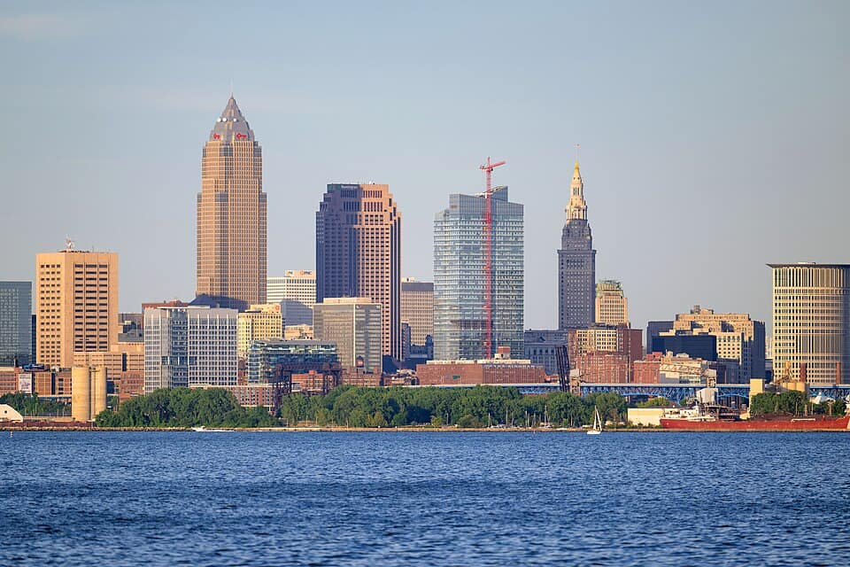
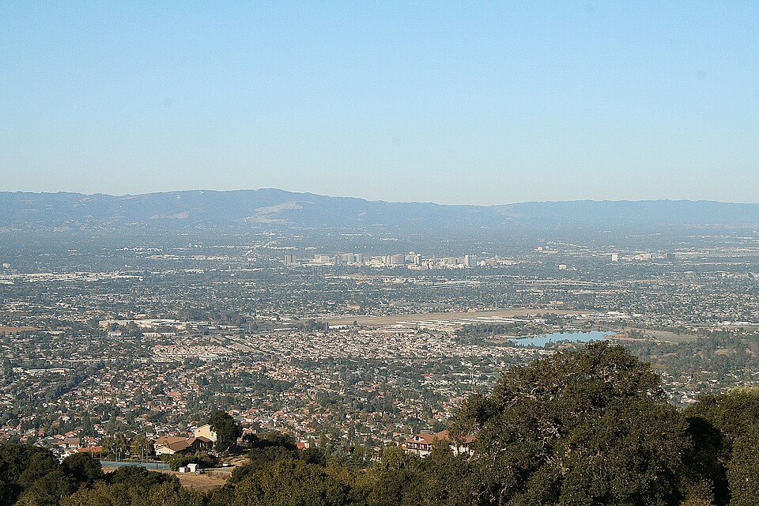
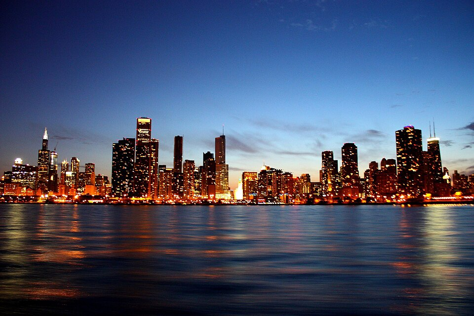
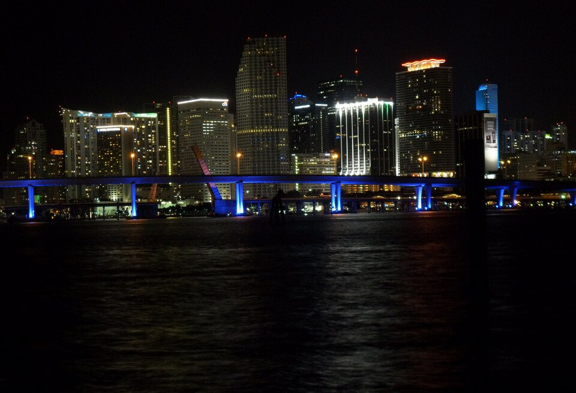
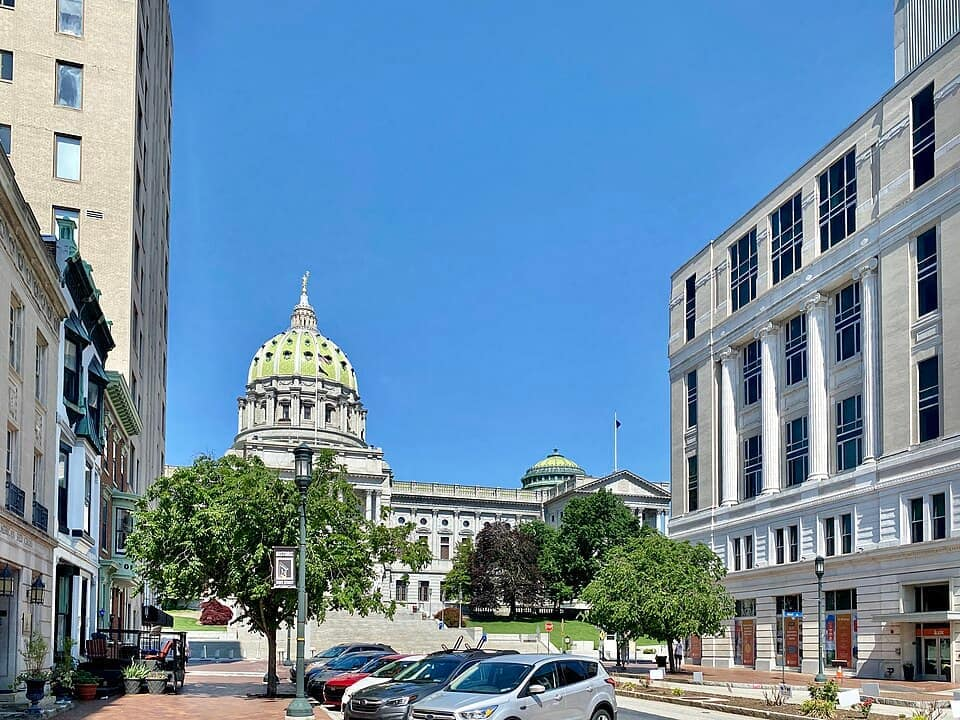
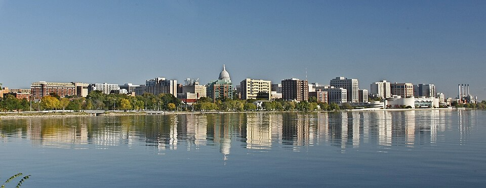
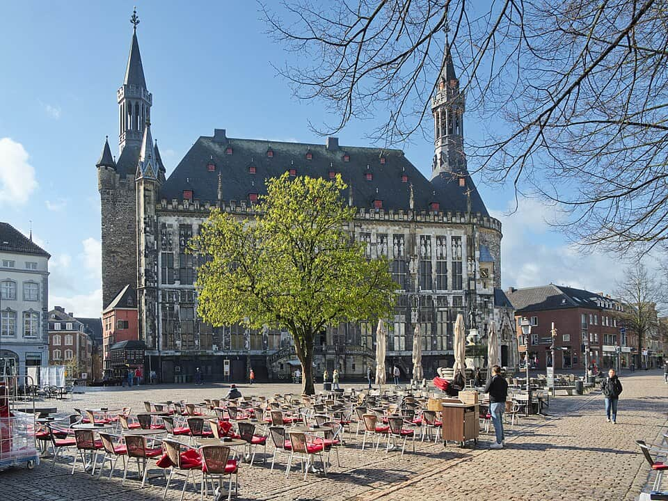
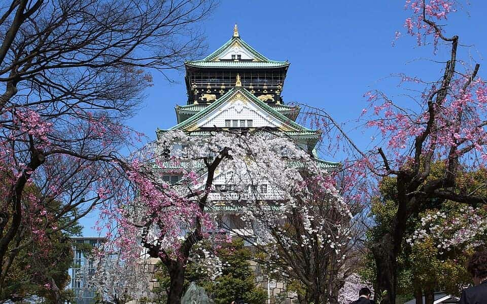
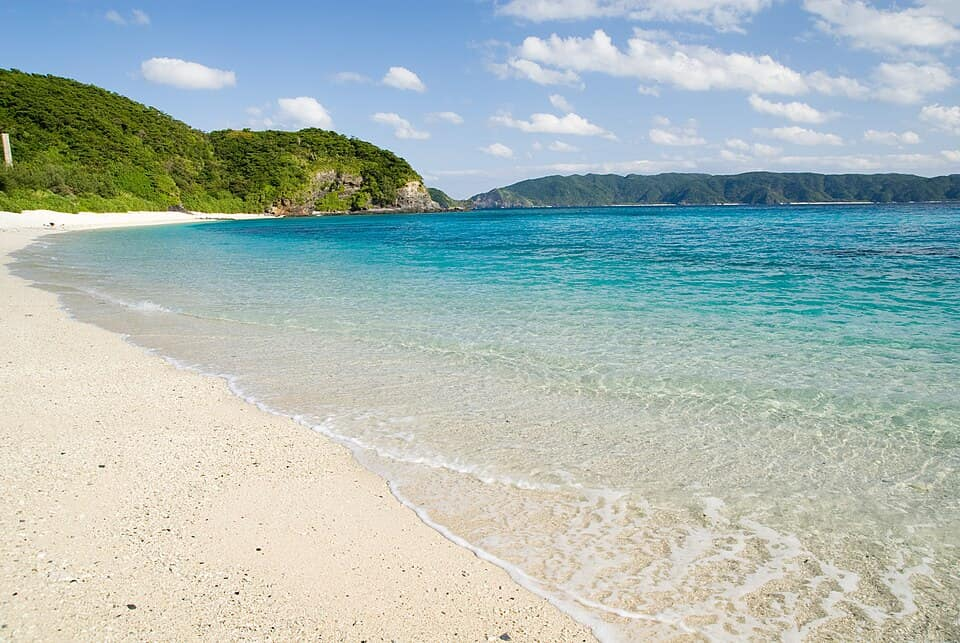
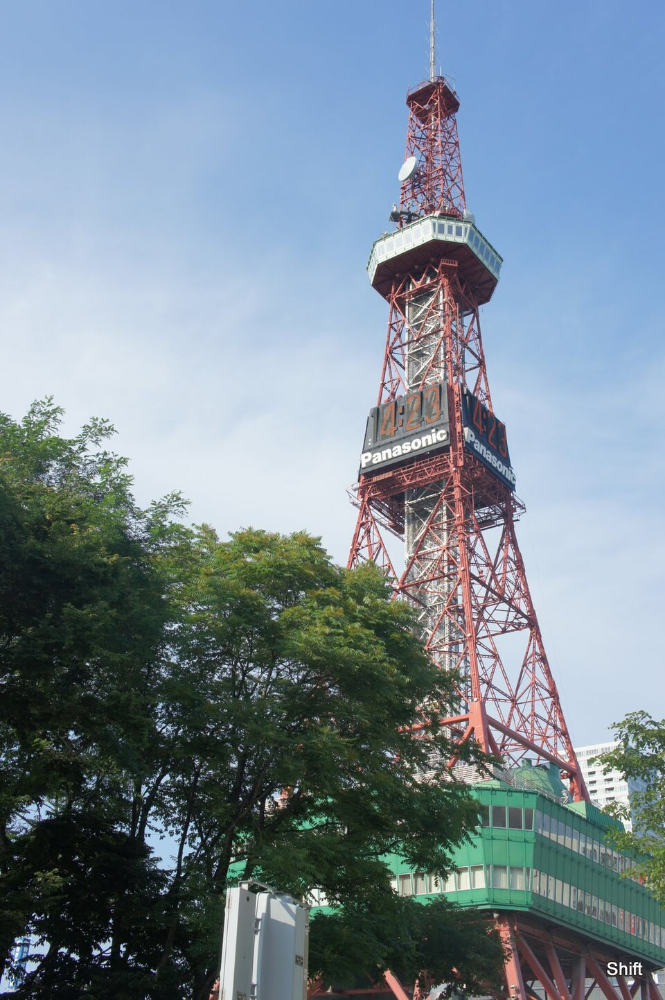

Sourced city guides
Where to next?
8,458 places across 84 guides in 6 countries. Every one recommended by named sources, pinned to the door and checked open.
United States21 guides · 4,144 places
-

Cleveland
194 places Known forPolish Boycorned beefHaserot AngelRecommended by News 5 Cleveland · Joe Donatelli & Drew Scofield + 14 morePhoto: Erik Drost · CC BY 2.0 · Wikimedia Commons (resized)
-

Youngstown
62 places Known forBrier HillpizzaPast Times ArcadeRecommended by Explore Mahoning + 26 morePhoto: Keith Roberts · Public domain · Wikimedia Commons (resized)
-

Pittsburgh
212 places Known forpierogifish sandwichPoint State ParkRecommended by Visit Pittsburgh + 48 morePhoto: EEJCC · CC BY-SA 4.0 · Wikimedia Commons (resized)
-

New York City
508 places Known forslicebagelEmpire State BuildingRecommended by NYC Tourism + Conventions (official) + 47 morePhoto: John Cunniff from New York, NY, USA · CC BY 2.0 · Wikimedia Commons (resized)
-

Silicon Valley
152 places Known forApple Park Visitor CenterThe Tech InteractiveBack A Yard Caribbean GrillRecommended by Official company/institution site + 34 morePhoto: Frank Schulenburg · CC BY-SA 4.0 · Wikimedia Commons (resized)
-

San Francisco
396 places Known forsourdoughMission burritoGolden Gate BridgeRecommended by Wikipedia + 53 morePhoto: Mariordo (Mario Roberto Durán Ortiz) · CC BY-SA 4.0 · Wikimedia Commons (resized)
-

Cincinnati
109 places Known forchiligoettaCincinnati Museum Center at Union TerminalRecommended by Wikipedia (published facts/coords) + 17 morePhoto: EEJCC · CC BY-SA 4.0 · Wikimedia Commons (resized)
-

Columbus
86 places Known forColumbus-stylepizzaOhio TheatreRecommended by Wikipedia + 32 morePhoto: Rfgagel · Public domain · Wikimedia Commons (resized)
-

Dayton
74 places Known forDayton-stylepizzaFrank Lloyd Wright's Westcott HouseRecommended by Wikipedia (published coordinates) + 34 morePhoto: The Mighty Tim Inconnu from Dayton, United States of America · CC BY 2.0 · Wikimedia Commons (resized)
-

Washington DC
134 places Known forhalf-smokecrabLincoln MemorialRecommended by Destination DC (washington.org) + 36 morePhoto: Architect of the Capitol · Public domain · Wikimedia Commons (resized; derivative work by O.J.)
-

State College
48 places Known forHorseshoe Curve National Historic LandmarkAltoona Railroaders Memorial MuseumPenn State Berkey CreameryRecommended by Wikipedia (notability + published coordinates) + 49 morePhoto: George Chriss · CC BY 2.5 · Wikimedia Commons (resized)
-

Wheeling
35 places Known forWheeling Suspension BridgeWest Virginia Independence HallFigaretti's RestaurantRecommended by Wikipedia (notability / history) + 38 morePhoto: Andre Carrotflower · CC BY-SA 4.0 · Wikimedia Commons (resized)
-

Erie
59 places Known forGreek saucesponge candySchaefer's Auto ArtRecommended by Wikipedia (sights / institutional facts) + 47 morePhoto: AndreCarrotflower · CC BY-SA 3.0 · Wikimedia Commons (resized)
-

Chicago
367 places Known fordeep-dishItalian beefPalmisano ParkRecommended by Wikipedia + 76 morePhoto: Ashokf11 · CC BY-SA 3.0 · Wikimedia Commons (resized)
-

Miami
325 places Known forCuban sandwichcroquetaCoral CastleRecommended by The Infatuation (Miami) + 46 morePhoto: Daniel Christensen · CC BY-SA 3.0 · Wikimedia Commons (resized)
-

Orlando
387 places Known forgatorCharles Hosmer Morse Museum of American ArtTinker Field History PlazaRecommended by Wikipedia + 89 morePhoto: OrlandoThings.com · CC BY-SA 4.0 · Wikimedia Commons (resized)
-

Indianapolis
156 places Known fortenderloinsugar cream pieSoldiers' and Sailors' MonumentRecommended by Wikipedia + 49 morePhoto: Daniel Schwen · CC BY-SA 4.0 · Wikimedia Commons (resized)
-

Philadelphia
363 places Known forcheesesteakroast porkIndependence HallRecommended by Visit Philadelphia + 39 morePhoto: 颐园居 · CC BY-SA 4.0 · Wikimedia Commons (resized)
-

Akron · Kent · Canton
150 places Known forBarberton chickenStan Hywet Hall & GardensMassillon MuseumRecommended by Akron Life + 62 morePhoto: Dillguy9 · CC0 1.0 · Wikimedia Commons (resized)
-

Harrisburg · York · Lancaster
171 places Known forshooflywhoopie piePennsylvania State CapitolRecommended by Wikipedia + 87 morePhoto: w_lemay · CC BY-SA 2.0 · Wikimedia Commons (resized)
-

Madison
156 places Known forcheese curdsfish fryWisconsin State CapitolRecommended by Wikipedia (notability + published coordinates) + 60 morePhoto: Ander107 · CC BY-SA 3.0 · Wikimedia Commons (resized)
Signatures across the guides6 countries · counts from the guides
Singapore29 guides · 598 places
All Singapore-

Toa Payoh
55 places Known forchicken riceHokkien meeToa Payoh Dragon PlaygroundRecommended by Seth Lui + 28 morePhoto: Chainwit. · CC BY 4.0 · Wikimedia Commons (resized)
-

Bishan
43 places Known forchicken ricechar kway teowKong Meng San Phor Kark See MonasteryRecommended by Eatbook.sg + 23 morePhoto: Pagodashophouse · CC BY-SA 3.0 · Wikimedia Commons (resized)
-
Ang Mo Kio
87 places Known forchicken ricelaksaBishan-Ang Mo Kio ParkRecommended by Seth Lui + 32 more -

Potong Pasir & MacPherson
60 places Known forchicken ricelaksaPotong Pasir Sloping-Roof HDBRecommended by Seth Lui + 32 morePhoto: Terence Ong · CC BY 2.5 · Wikimedia Commons (resized)
-

Upper Serangoon
99 places Known forchicken ricelaksaHougang Tou Mu KungRecommended by Seth Lui + 27 morePhoto: Terence Ong · CC BY 2.5 · Wikimedia Commons (resized)
-

Punggol
48 places Known forlaksabak chor meeConey Island ParkRecommended by Eatbook.sg + 32 morePhoto: Deoma12 · CC BY-SA 4.0 · Wikimedia Commons (resized)
-

Newton & Novena
42 places Known forchicken riceHokkien meeNewton Food CentreRecommended by Eatbook.sg + 33 morePhoto: Exec8 · CC BY-SA 4.0 · Wikimedia Commons (resized)
-

Balestier
49 places Known forchicken ricelaksaGoh Chor Tua Pek Kong TempleRecommended by Eatbook.sg + 23 morePhoto: Terence Ong · CC BY 2.5 · Wikimedia Commons (resized)
-

Holland Village
33 places Known forchicken ricechar kway teowGhim Moh Market & Food CentreRecommended by Eatbook.sg + 17 morePhoto: Qingwu Zhou (周庆武) · CC BY-SA 3.0 · Wikimedia Commons (resized)

More in Singapore
- Bedok1 placechar kway teow · Hill Street Fried Kway Teow
- Bukit Timah3 placesSingapore Botanic Gardens · Selera Rasa Nasi Lemak
- Changi2 placesJewel Changi Airport
- Chinatown & CBD16 placeschicken rice · laksa
- Civic District6 placesNational Gallery Singapore · Odette
- Dempsey Hill2 placesCandlenut · Burnt Ends
- Geylang2 placesGeylang Lor 9 Beef Kway Teow
- Jalan Besar & Lavender6 placesbak chor mee · Hill Street Tai Hwa Pork Noodle
- Jurong3 placesFei Fei Roasted Noodle
- Kampong Glam3 placesSultan Mosque · Hjh Maimunah Restaurant
- Katong & Joo Chiat7 placeslaksa · bak kut teh
- Little India5 placesSri Veeramakaliamman Temple · Former House of Tan Teng Niah
- Mandai3 placesSingapore Zoo · Night Safari
- Marina Bay6 placesGardens by the Bay · Marina Bay Sands SkyPark Observation Deck
- Marine Parade & East Coast2 placesEast Coast Park · Haron Satay
- Old Airport Road4 placesHokkien mee · Nam Sing Hokkien Fried Mee
- Queenstown & Redhill4 placeslaksa · Depot Road Zhen Shan Mei Claypot Laksa
- Southern Ridges2 placesSouthern Ridges · Haw Par Villa
- Tiong Bahru3 placesLoo's Hainanese Curry Rice · Jian Bo Tiong Bahru Shui Kueh
- Upper Thomson & MacRitchie2 placesMacRitchie Reservoir · Springleaf Prata Place
Vietnam5 guides · 183 places
All Vietnam
More in Vietnam
Germany3 guides · 751 places
All Germany-

Saarbrücken
287 places Known forDibbelabbesLyonerPalais des Ducs de LorraineRecommended by Wikipedia + 152 morePhoto: Wolfgang Staudt from Saarbruecken, Germany · CC BY 2.0 · Wikimedia Commons (resized)
-

Aachen
203 places Known forPrintenSauerbratenZitadelle JülichRecommended by Wikipedia (de/en) + 126 morePhoto: Armin Kleiner · CC BY-SA 4.0 · Wikimedia Commons (resized)
-

The Rhineland
261 places Known forKölschAltbierBeethoven-HausRecommended by Wikipedia + 76 morePhoto: Dietmar Rabich · CC BY-SA 4.0 · Wikimedia Commons (resized)
Belgium5 guides · 651 places
All Belgium-

Antwerp
137 places Known forfriteschocolateOnze-Lieve-VrouwekathedraalRecommended by Wikipedia (NL) + 68 morePhoto: Maros M r a z ( Maros ) · CC BY-SA 3.0 · Wikimedia Commons (resized)
-

Ghent
108 places Known forfriteschocolateSint-BaafskathedraalRecommended by Visit Gent (officiële stadstoerisme) + 48 morePhoto: Martinvl · CC BY-SA 4.0 · Wikimedia Commons (resized)
-

Brussels
139 places Known forwafflefritesGrand-Place / Grote MarktRecommended by Wikipedia (FR/EN) + 74 morePhoto: Theedi · CC BY-SA 4.0 · Wikimedia Commons (resized)
-

Bruges
123 places Known forchocolatetrappistMarktRecommended by Visit Bruges (official city tourism) + 70 morePhoto: Jean-Christophe BENOIST · CC BY 2.5 · Wikimedia Commons (resized)
-

Liège
144 places Known forgaufrebouletsPalais des Princes-ÉvêquesRecommended by Gault&millau + 39 morePhoto: FriedrichFrisch · CC BY-SA 4.0 · Wikimedia Commons (resized)
Japan5 guides · 2,092 places
All Japan-
 Anime, Manga & Pop Culture · 37
Anime, Manga & Pop Culture · 37
Tokyo
488 places Known forEdomae sushisobaEdo-Tokyo MuseumRecommended by Wikipedia + 32 morePhoto: David Kernan · CC BY 4.0 · Wikimedia Commons (resized)
-
 Anime, Manga & Pop Culture · 9
Anime, Manga & Pop Culture · 9
Kyoto
398 places Known forkaisekiyudofuNishiki MarketRecommended by Wikipedia + 41 morePhoto: Alberto Carrasco Casado · CC BY 2.0 · Wikimedia Commons (resized)
-

Anime, Manga & Pop Culture · 24Osaka
369 places Known fortakoyakiokonomiyakiSuper Nintendo WorldRecommended by Wikipedia + 41 morePhoto: Mc681 · CC BY-SA 4.0 · Wikimedia Commons (resized)
-

Anime, Manga & Pop Culture · 18Okinawa
425 places Known forOkinawa sobagoyaShikinaen Royal GardenRecommended by Rurubu (るるぶ&more, JTB Publishing) + 118 morePhoto: Hashi photo · CC BY 3.0 · Wikimedia Commons (resized)
-

Anime, Manga & Pop Culture · 28Hokkaido
412 places Known forjingisukanuniGoryōkakuRecommended by Wikipedia (Japanese) + 62 morePhoto: Suicasmo · CC BY-SA 4.0 · Wikimedia Commons (resized)
Collections across the guides10 collections · counts from the guides
- 116Anime pilgrimageReal streets and shrines from the manga and screen canon · across Japan Tokyo 37Hokkaido 28Osaka 24Okinawa 18+1 more guide
- 152The hawker canonStalls the city argues about, town by town · across 2 countries Newton & Novena 22Upper Serangoon 21Punggol 20Holland Village 19+15 more guides
- 420Temples & shrinesFrom Kyoto’s great halls to neighbourhood shrines · across 3 countries Kyoto 158Tokyo 79Ho Chi Minh City 52Osaka 42+17 more guides
- 89Ramen countersBowls named by the people who queue for them · across Japan Hokkaido 33Tokyo 33Kyoto 13Osaka 9+1 more guide
- 339Michelin & fine diningStarred and bib-gourmand tables, each with its source · across 4 countries Liège 59Kyoto 52Tokyo 52Osaka 34+10 more guides
- 138World HeritageUNESCO-listed sites, pinned to the door · across 3 countries Okinawa 30Kyoto 26Saarbrücken 26Brussels 12+9 more guides
- 53Onsen & sentōHot springs and neighbourhood bathhouses · across Japan Hokkaido 29Tokyo 12Kyoto 5Osaka 5+1 more guide
- 96Beer halls & brewersTrappist taps, Kölsch and the brown cafés that pour them · across 2 countries The Rhineland 24Antwerp 19Brussels 15Bruges 10+4 more guides
- 30Frank Lloyd WrightPrairie School houses and the buildings that made him · across United States Chicago 21Madison 9
- 1,218Free to visitMuseums, parks and landmarks that cost nothing · across 6 countries Tokyo 125Okinawa 108Saarbrücken 88Hokkaido 82+36 more guides


October 2026 in Cleo
Follow changes5,075 places re-checked against a source · 24 closures recorded, kept and flagged · 5,075 pins verified — across 24 guides.
- Tokyo488 re-checked · 1 closed
- Okinawa425 re-checked · 1 closed
- Hokkaido412 re-checked · 0 closed
- Kyoto398 re-checked · 0 closed
- Orlando387 re-checked · 2 closed
- Osaka369 re-checked · 2 closed
- Chicago367 re-checked · 2 closed
- Philadelphia363 re-checked · 2 closed
- Miami325 re-checked · 1 closed
- San Francisco262 re-checked · 0 closed
- Harrisburg · York · Lancaster171 re-checked · 1 closed
- Indianapolis156 re-checked · 0 closed
- Madison156 re-checked · 1 closed
- Akron · Kent · Canton150 re-checked · 0 closed
- Liège144 re-checked · 1 closed
- Upper Serangoon99 re-checked · 1 closed
- Ang Mo Kio87 re-checked · 1 closed
- Potong Pasir & MacPherson59 re-checked · 0 closed
- Ho Chi Minh City49 re-checked · 0 closed
- Balestier48 re-checked · 2 closed
- Punggol48 re-checked · 2 closed
- Bishan43 re-checked · 2 closed
- Newton & Novena38 re-checked · 1 closed
- Holland Village31 re-checked · 1 closed
An RSS feed of every closure and status check across the guides, for any feed reader. Each guide has its own on its What changed page.
How we choose
Read the whole method1,903 named sources
Named sources, always
Every place shows who recommends it. A place needs two credible sources — or one Michelin or James Beard nod. Review sites never count as the recommender.
8,458 places pinned
Pinned to the door
Each pin is checked against an official site, a map provider's place pin or Wikipedia's coordinates, with its source and date kept.
70 closed places kept, flagged
Closed is said out loud
Every place's status is checked against a real source. A closed place stays on the page, flagged, so you never go to a shuttered door.
Countries
 United States21 guides · 4,144 places
United States21 guides · 4,144 placesPhoto: Ashley98lee · CC BY-SA 4.0 · Wikimedia Commons (resized)
 Singapore29 guides · 598 places
Singapore29 guides · 598 placesPhoto: William Cho · CC BY-SA 2.0 · Wikimedia Commons (resized)
- Vietnam5 guides · 183 places
 Germany3 guides · 751 places
Germany3 guides · 751 placesPhoto: Mike Peel · CC BY-SA 4.0 · Wikimedia Commons (resized)
 Belgium5 guides · 651 places
Belgium5 guides · 651 placesPhoto: Trougnouf (Benoit Brummer) · CC BY 4.0 · Wikimedia Commons (resized)
 Japan5 guides · 2,092 places
Japan5 guides · 2,092 placesPhoto: Alpsdake · CC BY-SA 4.0 · Wikimedia Commons (resized)


Looking for the rest of Southeast Asia? Southeast Asia preview (archived index)
68 guides in live countries.